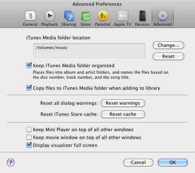
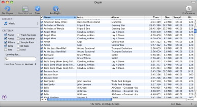
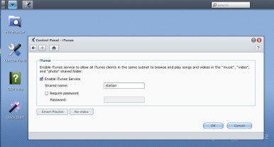
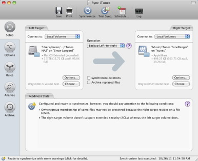
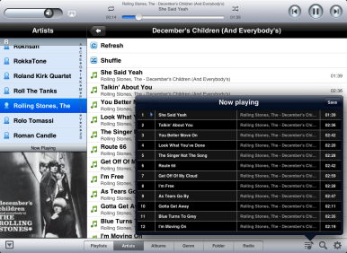
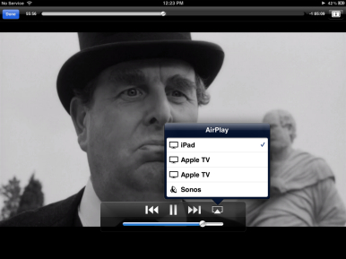

Organize and play your media from a NAS
As computers have become more affordable and taken on increasingly important tasks in our lives, it’s common to have more than one of them on the premises. While it’s terrific that family members and co-housers needn’t line up to use a single computer, things can get confusing when you have media scattered among a group of computers that everyone would like access to.
This is exactly the situation I faced. Many computers; dabs of media here, larger dollops there; and no really solid scheme for making it available to all the devices I own. Having finally had enough of the frustration, I resolved to do something about it. This is that story.
Gather and organize
Job One was to grab all the digital media I owned and put it on a single hard drive. For this I purchased a 2TB FireWire drive and moved from computer to computer, copying any music, video, podcasts, audiobooks, and ebooks I could find. I wasn’t particularly careful about what went where nor did I care about playlists or play counts. I wanted a fresh start and I was willing to lose the playlists I’d created for the greater good of taming my media. To ensure that I didn’t lose any media I didn’t trash any of the files on my computer. I simply created a Media folder on the drive and copied my media files and folders to the new drive.
I then attached that drive to my Mac Pro, held down the Option key, and launched iTunes. When you do this, iTunes prompts you to either choose a library or create a new one. I then followed these steps:
1. Choose Create Library, name the library, and save it to the Music folder within your user account (~/Music).
2. From iTunes’ Preferences click Advanced, click Change, and then navigate to the Media folder you created on the external hard drive. Leave the Keep iTunes Media Folder Organized option enabled but disable the Copy Files To iTunes Media Folder When Adding To Library option. Click OK to dismiss the Preferences window.

3. Choose File -> Add To Library and navigate to the Media folder on the external drive and click Open. iTunes will add the names of all the media files on your external drive to the iTunes Library window but it leaves the files where they are. This can take a long time, depending on how much media you have. As iTunes does this, it will organize files into the folder structure that the application uses.
Depending on where you acquired your media, it’s possible (likely, even) that some of your media will be misfiled. Some podcasts and audiobooks may get mixed in with your music files. TV Shows and music videos may appear in the Movies window. Look through your media and refile it. The proper way to do this is to select a file or group of files and press Command-I to bring up the Info window. Within this window click the Options tab, select the kind of media you’re refiling from the Media Kind pop-up menu—TV Show, for example—and click OK. iTunes will properly tag the media and move it to the correct folder within the iTunes Source list.
Cull it
You may be lucky enough to have completely different media on every Mac you own. I’m not. Once I pulled together this central library I found that I had duplicates everywhere. Before I created my “real” library, I needed to do something with the duplicate cruft.
Movies and TV shows I could deal with by simply scanning through the list and deleting duplicates as I found them—my video library is small enough that this isn’t terribly wearing. However, music was a completely different matter. I had duplicates and even triplicates of some tracks.
iTunes includes a Display Duplicates command that isn’t, in its default form, terribly helpful. Choose File -> Display Duplicates and it’s likely you’ll find studio tracks mixed in with their live and out-take counterparts. However, if you hold down the Option key, you find that this command changes to Find Exact Duplicates. That’s closer to the mark, but some of these duplicates aren’t exact. For example, you might find that one version is an MP3 file and an AAC-encoded version of the same track. Audiobook files are often identified as duplicates when they aren’t.
If you don’t have a lot of duplicates, you can cull the files by hand—selecting those files you don’t want, pressing the Delete key, and choosing to toss them out. But I had a load of duplicates and iTunes wasn’t entirely correct when identifying them.
I’ve used a variety of tools in the past to clean up a messy iTunes library . The one I chose for this job was Doug Adams’ $15 Dupin . I did so for its straightforward design and flexibility.

Presented in an iTunes-like interface, Dupin seeks out duplicate files in your entire iTunes library or within specific areas—Music, Movies, and TV Shows among them. Unlike with iTunes, you can search for files using a variety of criteria including Name, Artist, Album, Time, Size, Track Number, Disk Number, Sample Rate, Bit Rate, and Kind. You can choose multiple criteria—Name, Artist, Album, and Time, for example. Click Get Dupes and you’re presented with a list of duplicates.
Once you have that list, click a Filter button and then choose the factor you’ll use to identify the “keepers.” This can be Oldest Date Added, Highest Bit Rate, Largest File Size, and so on. You can also choose to always keep a particular kind of file—Apple Lossless or AAC files, for instance. Within this Dupin Filter Controls window you can choose to automatically delete any tracks that don’t match the filter. Or, you can allow Dupin to do its job and then purge your duplicate tracks.
I conducted a couple of searches using a variety of factors and eventually settled on searching by Name, Artist, Album, and Time. I then chose to filter by Highest Bit Rate as well as always keep Apple Lossless files. When I finished, I purged the duplicates in order to get them out of my iTunes library, but then retrieved them from the Trash and placed them in a Duplicates folder that I created. I probably didn’t need to as I had copies on my Macs, but should I miss something that was inadvertently deleted I reckoned it would be easier to locate it in this folder, which I could later archive or throw out.
Making it available
My media library was finally in decent shape. It was now time to put it in a place where I could easily access it from any computer. I chose to do this via a Network Attached Storage (NAS) device. Specifically, I purchased Synology’s DS111 (around $200 retail) and filled its single bay with a fast 2TB hard drive. I chose the DS111 after reading a variety of positive reviews. I wanted a NAS that supported gigabit ethernet, which this one does. I also wanted a flexible NAS, and it is. You can use the thing to perform a variety of jobs including setting it up as a Web, FTP, mail, and media server—all controlled through a browser interface.
Installing the hard drive was a snap—completed in about two minutes. Setup was likewise simple enough once I downloaded the most recent Synology tools. Leaving its more advanced features for later, I set about moving my media to it.
This I did by mounting the NAS’s drive and creating a Music folder on it. I then repeated some of my previous steps—launched iTunes with the Option key held down, created a new library within my ~/Music folder on my startup drive, and pointed iTunes Advanced preference to the Music folder on the NAS’s drive. This time I enabled the Copy Files To iTunes Media Folder When Adding To Library option as I wanted to be sure that when I added files to my iTunes library, those files would be placed on the NAS. I then chose File -> Add To Library, selected my now-organized and culled media files on the external FireWire drive, and went to bed rather than wait several hours while the files were copied over. The next morning, there they were in iTunes, ready to play.
I could have now left things exactly as they were. One of the features of this particular NAS is that it offers an iTunes Server. When this is switched on, the NAS will appear under the Shared entry in iTunes’ Source list. Simply select it and the music the NAS holds appears, just as if the songs were on your local hard drive. However, if you want to create playlists, you must do so within the NAS’s interface inside your Web browser. I prefer to manage this kind of thing just as I would if my media files were stored on my Mac. Plus, using this scheme, you can create different playlists on each Mac. So, dad can have his playlist full of Jimi Hendrix hits, mom can rock out to Zep, and child can ignore mom and dad’s old tunes and tune into Adele.

I then went to each Mac and performed these same steps save one. Now that the files were on the NAS, all I had to do was mount the NAS on that particular Mac, choose File -> Add To Library, and navigate to the Music folder on the NAS. No files were copied to the Mac. Rather iTunes simply added the tracks and video file names to the iTunes library. Over a wired ethernet connection this can take an hour or more for a large library. Over a wireless network, it takes significantly longer.
The final piece of this particular puzzle was to ensure that the NAS mounted each time I restarted my Mac. This I did by launching System Preferences, selecting the Users & Groups preference (choose Accounts if running a version of OS X prior to Lion), unlocking my Administrator's account, and clicking on the Login Items tab. I then mounted the Music folder on the NAS and dragged it to my list of login items. On restart the NAS mounted (I was prompted for its password before it did so, which occurs with each restart).
Syncing
At this point, all my Macs could play media from the NAS. The next problem I faced was being able to access media added to each Mac. Suppose, for example, I ripped a CD on my Mac Pro. That Mac would be aware of it, but my wife’s iMac wouldn’t because her library file wouldn’t be updated to include it. The solution is to synchronize the database files between the two computers.
I use (and am a fan of) Econ Technologies’ $40 ChronoSync , a synchronization utility that supports scheduling. Using ChronoSync I created a schedule on my Mac Pro that, at the end of each day, synchronizes iTunes’ database files (found in the iTunes folder)—Extras.itdb, iTunes Library Genius.itdb, iTunes Library.itl, and iTunes Library.xml—between the Mac Pro and the other Macs scattered around the house. In order for this scheme to work, I determined that new media would be added only to the Mac Pro. With this done, at day’s end, all my Macs were fully aware of the complete media content of the NAS. To avoid permissions issues, I changed the permissions on each file so that the Everyone permission was set to Read/Write.

There’s a hitch here. And that hitch is that when you replace these files on other Macs, you lose any playlists, ratings, and playcounts created on those other Macs. Instead, they’re replaced by the playlists, ratings, and playcounts from the master Mac—the one you’ve synchronized from. This isn’t a big deal to me as I manage and sync all my music from my Mac Pro, but it may be a concern to you.
ChronoSync is only one of many sync solutions. It’s one I own and like but if you prefer a different utility, have at it.
Playing on other devices
I play media on more devices than just my Macs. There are multiple iPhones, iPod touches, and iPads in the house as well as a couple of Apple TVs and a Sonos Multi-Room Music System . I wanted to grant access to these devices as well.
Sonos The Sonos gear was the first and easiest setup. Within the Sharing system preference I had to ensure that SMB file sharing was switched on. To do that, select File Sharing in the Sharing system preference, click the Options button, and enable Share Files And Folders Using SMB (Windows). I then mounted the NAS on my Mac Pro’s desktop. With this done I launched the Sonos Desktop Controller application on my Mac, chose Music -> Set Up Music Library, clicked the Add button in the resulting Music Setup window, selected the NAS option, clicked Continue, entered a path to the NAS along with its username and password (so that Sonos would always have access to it), and clicked a couple of buttons to allow the job to be done. After several minutes, the audio files on the NAS were accessible to my Sonos gear.
iPhone, iPod touch, iPad Gaining access to the media on the NAS from an iOS device is straightforward provided that you’ve enabled Home Sharing on the device and one of your Macs is switched on (and also has Home Sharing enabled). Under such circumstances, you simply access the content by tapping More within the Music app, tapping Shared, waiting for the list of content to load, and tapping Play to play it. (Videos works similarly, though there’s no More button. Just tap Shared, select the iTunes library you’ve shared from your Mac, and play the video.)
That’s all well and good, but one of the reasons for storing media on an NAS is so you don’t have to have your Mac running whenever you want to play that media. Fortunately, there are tools you can use to access that media directly.

Synology offers a number of apps that provide access to your media. Its free DS Audio app allows you to stream music from the NAS to your iOS device using an interface similar to Apple’s Music app. With Synology’s just-as-free DS File app , you can stream video files directly from the NAS to your iPhone, iPod touch, or iPad (you must enable WebDAV on the NAS for this to work). Makers of other NAS devices offer similar utilities.
Another option that I found helpful is Stratospherix’s $4 FileBrowser app . It provides complete access to the contents of any networked computer, including Macs, Windows PCs, Linux boxes, and NAS drives. Just navigate to a folder that contains media, tap the file you want to play, and it plays using the iOS device’s media player interface.
Note that in the case of the Synology apps as well as FileBrowser, your iOS device can’t play media protected with Apple’s FairPlay technology. If you want to play or view this content, you must use Home Sharing and have iTunes running on the Mac you’re accessing.

Apple TV 2 This device is trickier because it refuses to recognize the existence of a NAS. However, if you have an iPhone, iPod touch, or iPad that supports AirPlay, you’re in business. The trick is to call up the media you want to play—music or video—start it playing, tap the AirPlay icon in the app’s controller (AirPlay appears in all the apps I’ve mentioned), and then select your Apple TV as the destination. Your music or video will stream from the NAS to the iOS device and then to the Apple TV. With all these jumps you’d think there’d be latency issues but it works quite well, though there can be a several second delay before a movie begins playing.
At the end of a long day
I’d achieved my goal—an NAS packed with all my media that was available to all my Macs, iOS devices, and essential media gear. I offer this as a guide to how it can be done, not how it has to be done. There are other ways to organize, cull, and synchronize media; and other perfectly fine NAS devices. If, like me, you have a house full of gear and media scattered from one end of it to the other, I hope this demonstrates that it can be tamed.
Products mentioned in this article
(4 items)


{kind=link}
{kind=link}
{kind=link}
{kind=link}